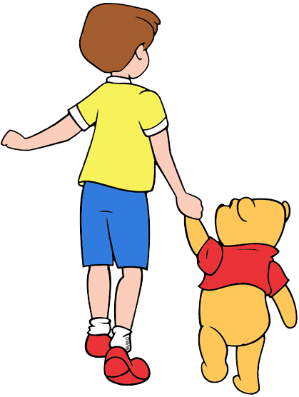

──────INFORMACION──────

Pooh reside en el Bosque de los Cien Acres, un mundo imaginativo habitado por animales de peluche
antropomórficos y animales con que Christopher Robin juega. Pooh está lleno de pelusa y, por lo tanto, es
impermeable al dolor. Sus costuras se abren de vez en cuando, pero Pooh se ha acostumbrado tanto que puede
coserse nuevamente en segundos. La casa del árbol de Pooh (que está bajo el nombre Sanders), está llena
principalmente de jarras y tarros de miel, que cosecha de las colmenas durante todo el día.
Ante el tintineo de su "reloj Pooh-koo", Pooh normalmente comienza sus mañanas con su "ejercicio de
rigidez", que es un intento irónico de ganar peso, en lugar de perderlo. Cuando no está recogiendo miel o
meditando sobre nada en su lugar pensativo, Pooh pasa el día con sus amigos, el más significativo de los
cuales es Christopher Robin, con quien comparte un vínculo especial.
SERIES
- The New Adventures of Winnie the Pooh
- House of Mouse
- El Libro de Pooh
- Mis Amigos Tigger y Pooh
- A Poem Is..
- Doctora Juguetes
PELICULAS
- The Many Adventures of Winnie the Pooh
- Pooh's Grand Adventure: The Search for Christopher Robin
- La Película de Tigger
- La Gran Película de Piglet
- Mickey's Magical Christmas: Snowed in at the House of Mouse
- Winnie the Pooh
- Pooh's Heffalump Movie (cameo)
- Christopher Robin